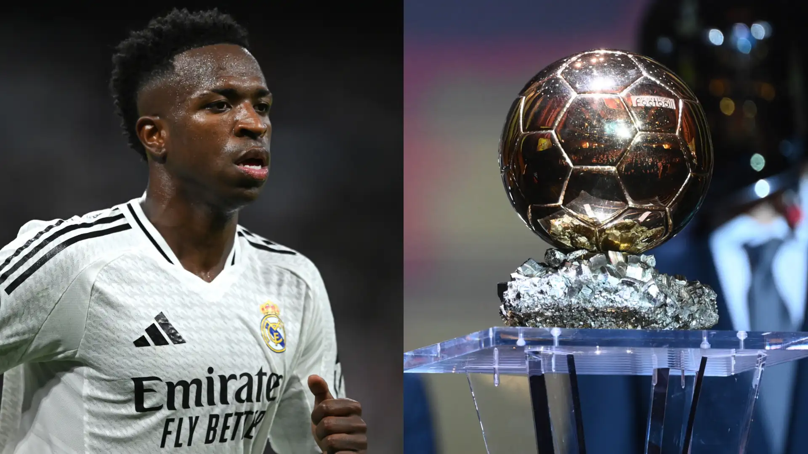

Avanços na Tecnologia
O prêmio Bola de Ouro 2024 será entregue hoje (28) com o brasileiro Vinícius Júnior como o grande favorito, após ter sido um dos grandes protagonistas do Real Madrid na campanha vencedora Champions League.Contudo, Vini Jr. não é o melhor jogador brasileiro da atualidade para muitos torcedores. Nas redes sociais, há diversas manifestações favoráveis ao atacante do Barcelona Raphinha, que foi um dos protagonistas da goleada do Barça justamente sobre o Real Madrid, por 4 a 0, em jogo com atuação apagada de Vinícius Júnior.Vale lembrar que na última quarta-feira (23), Raphinha anotou três gols na vitória por 4 a 1 diante do Bayern de Munique, pela Champions League. O momento do atacante brasileiro é muito bom, pois na atual temporada, marcou 10 gols e ofereceu nove assistências em 14 jogos.Destaque também para o desempenho de Raphinha na seleção brasileira. Na última Data Fifa, o Brasil venceu os dois jogos que disputou, com o craque anotando dois gols. E o time de Dorival Júnior venceu duas vezes seguidas pela primeira vez justamente quando Vini era ausência.Na temporada Vinícius Júnior tem 15 jogos, com 8 gols marcados e 7 assistências. Os números são bons, mas inferiores ao de seu companheiro de seleção.
